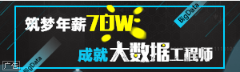

菜鸟
Html
Css
Javascript
bootstrap
nav
nav
nav
JQUERY
SQL
MYSQL
登录
推荐
最新文章
关注
资讯
人工智能
云计算/大数据
区块链
数据库
程序人生
游戏开发
研发管理
前端
移动开发
最新文章
物联网
运维
计算机基础
编程语言
架构
音视频开发
安全
其他

今日推荐
两年洗钱80亿，交易所是黑客洗钱幕后推手还是受害者
两年洗钱80亿，交易所是黑客洗钱幕后推手还是受害者
两年洗钱80亿，交易所是黑客洗钱幕后推手还是受害者
两年洗钱80亿，交易所是黑客洗钱幕后推手还是受害者
两年洗钱80亿，交易所是黑客洗钱幕后推手还是受害者
两年洗钱80亿，交易所是黑客洗钱幕后推手还是受害者
两年洗钱80亿，交易所是黑客洗钱幕后推手还是受害者
两年洗钱80亿，交易所是黑客洗钱幕后推手还是受害者
两年洗钱80亿，交易所是黑客洗钱幕后推手还是受害者
两年洗钱80亿，交易所是黑客洗钱幕后推手还是受害者